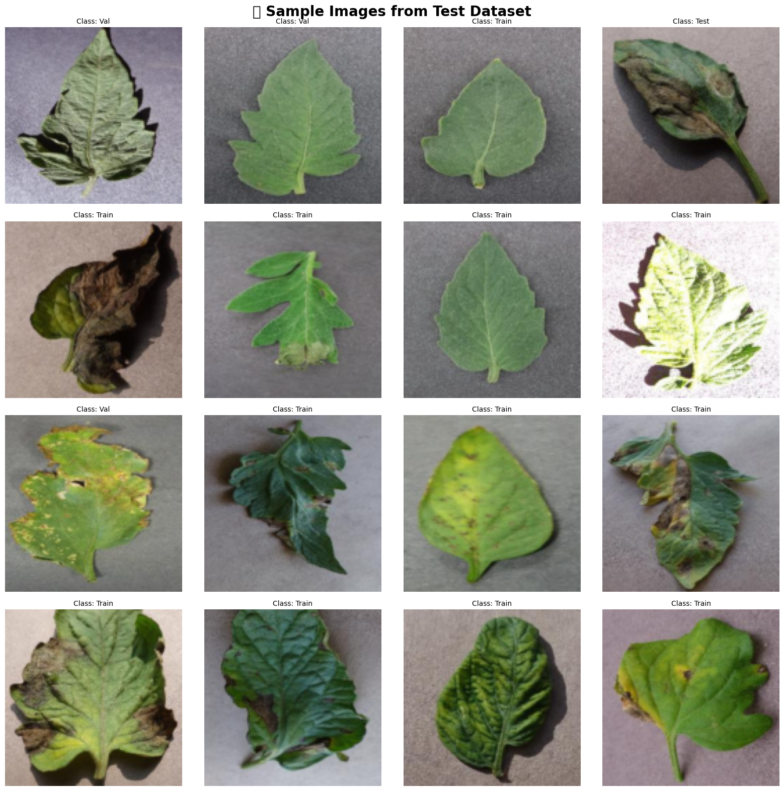
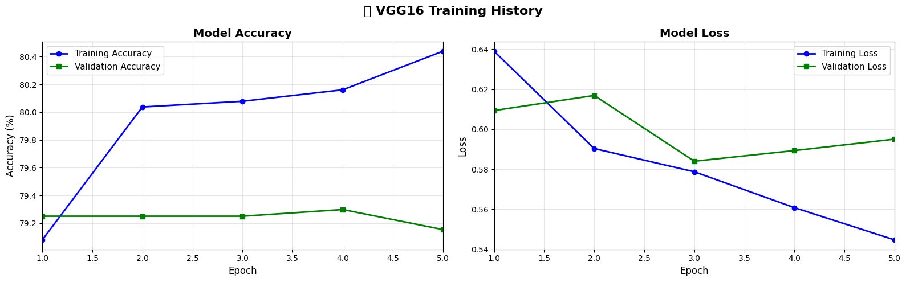
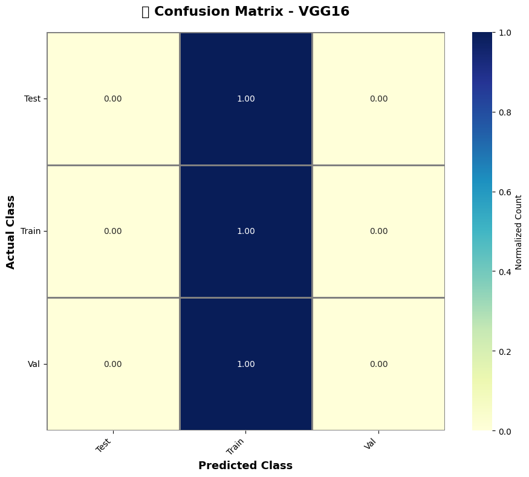
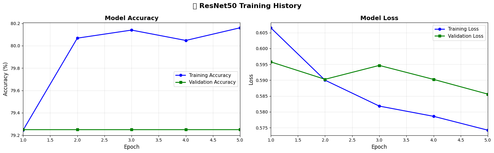
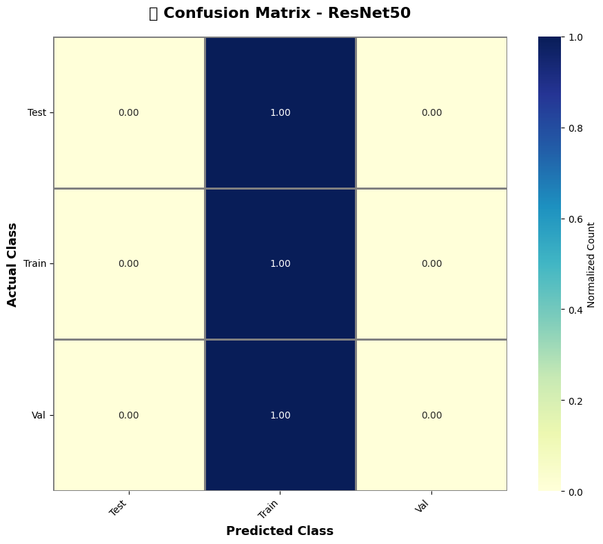
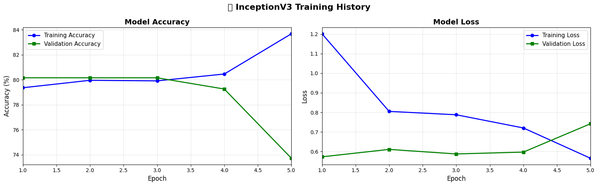
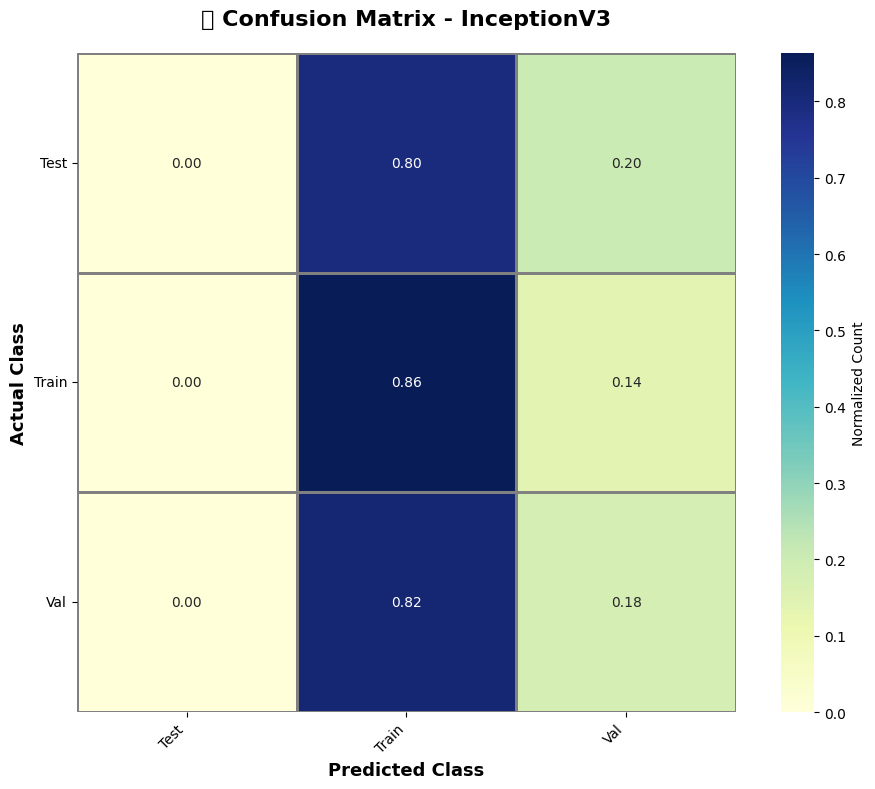
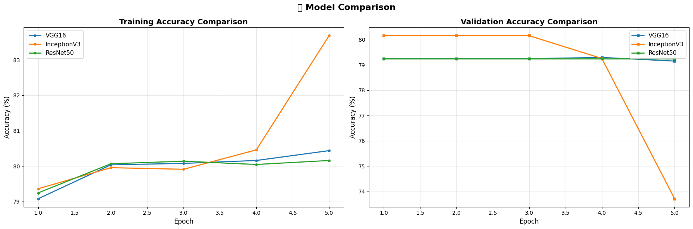
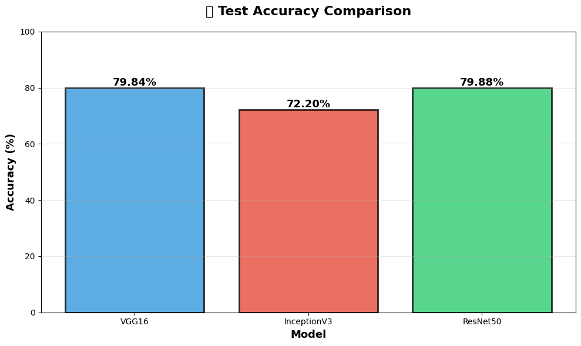

Aim: Implement an image classification task using pre-trained models like AlexNet, VGGNet, InceptionNet and ResNet and compare the results.
Pratham Goyal A2345924079 4CSE-2eve
This notebook demonstrates the implementation of Transfer Learning using PyTorch for plant disease classification. We'll explore three state-of-the-art pre-trained models:
!pip install wandb
import wandb
from dotenv import load_dotenv
import os
load_dotenv('/kaggle/input/environment-variable/.env')
print(f"API key found in environment? {os.getenv('WANDB_API_KEY') is not None}")
# wandb.login()
if wandb.login():
print("Successfully logged in to Weights & Biases!")
else:
print("Failed to log in to Weights & Biases. Check your API key in the .env file.")Requirement already satisfied: wandb in /usr/local/lib/python3.12/dist-packages (0.22.2)
Requirement already satisfied: click>=8.0.1 in /usr/local/lib/python3.12/dist-packages (from wandb) (8.3.1)
Requirement already satisfied: gitpython!=3.1.29,>=1.0.0 in /usr/local/lib/python3.12/dist-packages (from wandb) (3.1.45)
Requirement already satisfied: packaging in /usr/local/lib/python3.12/dist-packages (from wandb) (25.0)
Requirement already satisfied: platformdirs in /usr/local/lib/python3.12/dist-packages (from wandb) (4.5.1)
Requirement already satisfied: protobuf!=4.21.0,!=5.28.0,<7,>=3.19.0 in /usr/local/lib/python3.12/dist-packages (from wandb) (5.29.5)
Requirement already satisfied: pydantic<3 in /usr/local/lib/python3.12/dist-packages (from wandb) (2.12.5)
Requirement already satisfied: pyyaml in /usr/local/lib/python3.12/dist-packages (from wandb) (6.0.3)
Requirement already satisfied: requests<3,>=2.0.0 in /usr/local/lib/python3.12/dist-packages (from wandb) (2.32.5)
Requirement already satisfied: sentry-sdk>=2.0.0 in /usr/local/lib/python3.12/dist-packages (from wandb) (2.42.1)
Requirement already satisfied: typing-extensions<5,>=4.8 in /usr/local/lib/python3.12/dist-packages (from wandb) (4.15.0)
Requirement already satisfied: gitdb<5,>=4.0.1 in /usr/local/lib/python3.12/dist-packages (from gitpython!=3.1.29,>=1.0.0->wandb) (4.0.12)
Requirement already satisfied: annotated-types>=0.6.0 in /usr/local/lib/python3.12/dist-packages (from pydantic<3->wandb) (0.7.0)
Requirement already satisfied: pydantic-core==2.41.5 in /usr/local/lib/python3.12/dist-packages (from pydantic<3->wandb) (2.41.5)
Requirement already satisfied: typing-inspection>=0.4.2 in /usr/local/lib/python3.12/dist-packages (from pydantic<3->wandb) (0.4.2)
Requirement already satisfied: charset_normalizer<4,>=2 in /usr/local/lib/python3.12/dist-packages (from requests<3,>=2.0.0->wandb) (3.4.4)
Requirement already satisfied: idna<4,>=2.5 in /usr/local/lib/python3.12/dist-packages (from requests<3,>=2.0.0->wandb) (3.11)
Requirement already satisfied: urllib3<3,>=1.21.1 in /usr/local/lib/python3.12/dist-packages (from requests<3,>=2.0.0->wandb) (2.6.2)
Requirement already satisfied: certifi>=2017.4.17 in /usr/local/lib/python3.12/dist-packages (from requests<3,>=2.0.0->wandb) (2025.11.12)
Requirement already satisfied: smmap<6,>=3.0.1 in /usr/local/lib/python3.12/dist-packages (from gitdb<5,>=4.0.1->gitpython!=3.1.29,>=1.0.0->wandb) (5.0.2)
/usr/local/lib/python3.12/dist-packages/pydantic/_internal/_generate_schema.py:2249: UnsupportedFieldAttributeWarning: The 'repr' attribute with value False was provided to the `Field()` function, which has no effect in the context it was used. 'repr' is field-specific metadata, and can only be attached to a model field using `Annotated` metadata or by assignment. This may have happened because an `Annotated` type alias using the `type` statement was used, or if the `Field()` function was attached to a single member of a union type.
warnings.warn(
/usr/local/lib/python3.12/dist-packages/pydantic/_internal/_generate_schema.py:2249: UnsupportedFieldAttributeWarning: The 'frozen' attribute with value True was provided to the `Field()` function, which has no effect in the context it was used. 'frozen' is field-specific metadata, and can only be attached to a model field using `Annotated` metadata or by assignment. This may have happened because an `Annotated` type alias using the `type` statement was used, or if the `Field()` function was attached to a single member of a union type.
warnings.warn(
API key found in environment? True
wandb: Currently logged in as: prathamgoyal7411 (v8god-01) to https://api.wandb.ai. Use `wandb login --relogin` to force relogin
Successfully logged in to Weights & Biases!
# Core PyTorch imports
import torch
import torch.nn as nn
import torch.optim as optim
from torch.utils.data import DataLoader
from torchvision import datasets, transforms, models
# Numerical operations
import numpy as np
# Visualization libraries
import matplotlib.pyplot as plt
import seaborn as sns
# Metrics and evaluation
from sklearn.metrics import confusion_matrix, classification_report, accuracy_score
# Utilities
import os
from tqdm import tqdm
import warnings
warnings.filterwarnings('ignore')
# Set random seeds for reproducibility
torch.manual_seed(42)
np.random.seed(42)
# Check for GPU availability
device = torch.device('cuda' if torch.cuda.is_available() else 'cpu')
print(f"🔧 Using device: {device}")
if torch.cuda.is_available():
print(f" GPU: {torch.cuda.get_device_name(0)}")
print(f" Memory: {torch.cuda.get_device_properties(0).total_memory / 1e9:.2f} GB")🔧 Using device: cuda
GPU: Tesla T4
Memory: 15.83 GB
The dataset is organized in the following directory structure:
plant_village/
├── train/ (70% - Training data)
├── val/ (20% - Validation data)
└── test/ (10% - Testing data)# ==================== Imports ====================
import os
import torch
from tqdm import tqdm
from sklearn.metrics import accuracy_score
from torch.utils.data import DataLoader, random_split
from torchvision import datasets, transforms
IMG_SIZE= 128
BATCH_SIZE = 16
NUM_WORKERS = 2
SEED = 42
# ==================== Auto-detect dataset folder ====================
BASE_PATH = "/kaggle/input/plant-village-dataset-updated"
subfolders = [
os.path.join(BASE_PATH, d)
for d in os.listdir(BASE_PATH)
if os.path.isdir(os.path.join(BASE_PATH, d))
]
DATA_DIR = subfolders[0] # take first valid folder
print(f"📁 Using dataset folder: {DATA_DIR}")
# ==================== Transforms ====================
imagenet_mean = [0.485, 0.456, 0.406]
imagenet_std = [0.229, 0.224, 0.225]
transform = transforms.Compose([
transforms.Resize((IMG_SIZE, IMG_SIZE)),
transforms.ToTensor(),
transforms.Normalize(imagenet_mean, imagenet_std)
])
# ==================== Load Dataset ====================
print("📦 Loading dataset...")
full_dataset = datasets.ImageFolder(DATA_DIR, transform=transform)
# ==================== Split ====================
torch.manual_seed(SEED)
total_size = len(full_dataset)
train_size = int(0.7 * total_size)
val_size = int(0.15 * total_size)
test_size = total_size - train_size - val_size
train_dataset, val_dataset, test_dataset = random_split(
full_dataset, [train_size, val_size, test_size]
)
# ==================== DataLoaders ====================
train_loader = DataLoader(
train_dataset,
batch_size=BATCH_SIZE,
shuffle=True,
num_workers=NUM_WORKERS,
pin_memory=torch.cuda.is_available()
)
val_loader = DataLoader(
val_dataset,
batch_size=BATCH_SIZE,
shuffle=False,
num_workers=NUM_WORKERS,
pin_memory=torch.cuda.is_available()
)
test_loader = DataLoader(
test_dataset,
batch_size=1,
shuffle=False,
num_workers=NUM_WORKERS,
pin_memory=torch.cuda.is_available()
)
class_names = full_dataset.classes
num_classes = len(class_names)
print("Classes:", class_names)
# ==================== Info ====================
print("✅ Dataset loaded successfully!")
print(f"📊 Classes: {len(full_dataset.classes)}")
print(f"📈 Train: {len(train_dataset)}")
print(f"📊 Val: {len(val_dataset)}")
print(f"🧪 Test: {len(test_dataset)}")📁 Using dataset folder: /kaggle/input/plant-village-dataset-updated/Tomato
📦 Loading dataset...
Classes: ['Test', 'Train', 'Val']
✅ Dataset loaded successfully!
📊 Classes: 3
📈 Train: 9718
📊 Val: 2082
🧪 Test: 2083
Let's visualize a sample of images from our test dataset to understand the data we're working with. This helps in:
# ==================== Visualize Sample Images ====================
def denormalize_image(tensor, mean, std):
"""
Denormalize an image tensor back to [0, 1] range for visualization.
Args:
tensor: Normalized image tensor
mean: Mean values used for normalization
std: Standard deviation values used for normalization
Returns:
Denormalized image as numpy array
"""
img = tensor.clone()
for t, m, s in zip(img, mean, std):
t.mul_(s).add_(m) # Reverse normalization: x = x * std + mean
img = torch.clamp(img, 0, 1) # Clip values to [0, 1]
return img.permute(1, 2, 0).numpy()
# Create a figure with 4x4 grid
plt.figure(figsize=(16, 16))
plt.suptitle('🌿 Sample Images from Test Dataset', fontsize=20, fontweight='bold')
# Get an iterator for the test loader
test_iter = iter(test_loader)
# Display 16 sample images
for i in range(1, 17):
plt.subplot(4, 4, i)
# Get next image and label
img, label = next(test_iter)
# Denormalize and display
img_display = denormalize_image(img[0].cpu(), imagenet_mean, imagenet_std)
plt.imshow(img_display)
plt.title(f'Class: {class_names[label[0]]}', fontsize=10)
plt.axis('off')
plt.tight_layout()
plt.show()
# Display shape information
sample_img, sample_label = next(iter(test_loader))
print(f"\n📐 Image shape: {sample_img.shape}")
print(f" Format: [Batch, Channels, Height, Width]")
print(f" Channels: {sample_img.shape[1]} (RGB)")
print(f" Dimensions: {sample_img.shape[2]}×{sample_img.shape[3]}")
📐 Image shape: torch.Size([1, 3, 128, 128])
Format: [Batch, Channels, Height, Width]
Channels: 3 (RGB)
Dimensions: 128×128
ImageNet is one of the largest and most influential image databases in computer vision research:
Transfer learning leverages knowledge from models trained on ImageNet:
We'll use three pre-trained architectures and replace only the final classification layer to adapt for plant disease classification (4 classes).
VGG16 (Visual Geometry Group) is a classic CNN architecture:
# ==================== VGG16 Model Definition ====================
def create_vgg16_model(num_classes=4, pretrained=True):
"""
Create a VGG16 model with custom classification head.
Args:
num_classes: Number of output classes (default: 4)
pretrained: Use ImageNet pre-trained weights (default: True)
Returns:
PyTorch model ready for training
"""
print("🏗️ Building VGG16 model...")
# Load pre-trained VGG16 (without final classifier)
base_model = models.vgg16(pretrained=pretrained)
# Freeze all base model parameters (transfer learning)
for param in base_model.features.parameters():
param.requires_grad = False
# Remove the original classifier
# VGG16 has avgpool and classifier, we'll replace classifier
base_model.classifier = nn.Sequential(
# nn.AdaptiveAvgPool2d((1, 1)), # Global Average Pooling
# nn.Flatten(), # Flatten to 1D vector
# nn.Linear(512, num_classes) # Final classification layer
nn.Linear(25088, 4096),
nn.ReLU(inplace=True),
nn.Dropout(0.5),
nn.Linear(4096, 4096),
nn.ReLU(inplace=True),
nn.Dropout(0.5),
nn.Linear(4096, num_classes)
)
print(f" ✅ VGG16 model created with {num_classes} output classes")
print(f" 🔒 Base layers frozen (not trainable)")
print(f" 🔓 Custom classifier head (trainable)")
return base_model
# Create VGG16 model
vgg16_model = create_vgg16_model(num_classes=num_classes)
vgg16_model = vgg16_model.to(device)
# Display model summary
print("\n" + "="*70)
print("VGG16 MODEL ARCHITECTURE")
print("="*70)
total_params = sum(p.numel() for p in vgg16_model.parameters())
trainable_params = sum(p.numel() for p in vgg16_model.parameters() if p.requires_grad)
print(f"Total parameters: {total_params:,}")
print(f"Trainable parameters: {trainable_params:,}")
print(f"Frozen parameters: {total_params - trainable_params:,}")
print("="*70)🏗️ Building VGG16 model...
✅ VGG16 model created with 3 output classes
🔒 Base layers frozen (not trainable)
🔓 Custom classifier head (trainable)
======================================================================
VGG16 MODEL ARCHITECTURE
======================================================================
Total parameters: 134,272,835
Trainable parameters: 119,558,147
Frozen parameters: 14,714,688
======================================================================
We'll create reusable training and validation functions that:
# ==================== Training and Validation Functions ====================
def train_one_epoch(model, loader, criterion, optimizer, device):
"""
Train the model for one epoch.
Args:
model: PyTorch model
loader: Training data loader
criterion: Loss function
optimizer: Optimization algorithm
device: CPU or CUDA device
Returns:
Average loss and accuracy for the epoch
"""
model.train() # Set model to training mode
running_loss = 0.0
correct = 0
total = 0
# Progress bar for training
pbar = tqdm(loader, desc='Training', leave=False)
for images, labels in pbar:
# Move data to device
images, labels = images.to(device), labels.to(device)
# Zero the gradients
optimizer.zero_grad()
# Forward pass
outputs = model(images)
loss = criterion(outputs, labels)
# Backward pass and optimization
loss.backward()
optimizer.step()
# Calculate statistics
running_loss += loss.item() * images.size(0)
_, predicted = torch.max(outputs, 1)
total += labels.size(0)
correct += (predicted == labels).sum().item()
# Update progress bar
pbar.set_postfix({'loss': f'{loss.item():.4f}'})
# Calculate epoch metrics
epoch_loss = running_loss / total
epoch_acc = 100.0 * correct / total
return epoch_loss, epoch_acc
def validate(model, loader, criterion, device):
"""
Validate the model on validation/test set.
Args:
model: PyTorch model
loader: Validation data loader
criterion: Loss function
device: CPU or CUDA device
Returns:
Average loss and accuracy
"""
model.eval() # Set model to evaluation mode
running_loss = 0.0
correct = 0
total = 0
# Progress bar for validation
pbar = tqdm(loader, desc='Validation', leave=False)
with torch.no_grad(): # Disable gradient calculation
for images, labels in pbar:
# Move data to device
images, labels = images.to(device), labels.to(device)
# Forward pass
outputs = model(images)
loss = criterion(outputs, labels)
# Calculate statistics
running_loss += loss.item() * images.size(0)
_, predicted = torch.max(outputs, 1)
total += labels.size(0)
correct += (predicted == labels).sum().item()
# Calculate metrics
val_loss = running_loss / total
val_acc = 100.0 * correct / total
return val_loss, val_acc
def train_model(model, train_loader, val_loader, num_epochs, learning_rate, model_name, use_wandb=True):
"""
Complete training loop with optional Weights & Biases logging.
"""
# ==================== W&B INIT ====================
if use_wandb:
wandb.init(
project="Plant-Disease-Classification",
name=model_name,
config={
"model": model_name,
"epochs": num_epochs,
"learning_rate": learning_rate,
"batch_size": train_loader.batch_size,
"device": str(device)
}
)
wandb.watch(model, log="all", log_freq=100)
print(f"\n{'='*70}")
print(f"🚀 Starting Training: {model_name}")
print(f"{'='*70}\n")
criterion = nn.CrossEntropyLoss()
optimizer = optim.Adam(
filter(lambda p: p.requires_grad, model.parameters()),
lr=learning_rate
)
# Initialize history tracking
history = {
'train_loss': [],
'train_acc': [],
'val_loss': [],
'val_acc': []
}
best_val_acc = 0.0
# ==================== TRAINING LOOP ====================
for epoch in range(num_epochs):
print(f"\n📅 Epoch {epoch+1}/{num_epochs}")
print("-" * 50)
train_loss, train_acc = train_one_epoch(
model, train_loader, criterion, optimizer, device
)
val_loss, val_acc = validate(
model, val_loader, criterion, device
)
# Save history
history['train_loss'].append(train_loss)
history['train_acc'].append(train_acc)
history['val_loss'].append(val_loss)
history['val_acc'].append(val_acc)
print(f" 📊 Train Loss: {train_loss:.4f} | Train Acc: {train_acc:.2f}%")
print(f" 📊 Val Loss: {val_loss:.4f} | Val Acc: {val_acc:.2f}%")
# ==================== W&B LOG ====================
if use_wandb:
wandb.log({
"epoch": epoch + 1,
"train_loss": train_loss,
"train_accuracy": train_acc,
"val_loss": val_loss,
"val_accuracy": val_acc
})
if val_acc > best_val_acc:
best_val_acc = val_acc
torch.save(model.state_dict(), f"{model_name}_best.pth")
print(f" 💾 Saved best model")
torch.save(model.state_dict(), f"{model_name}_final.pth")
if use_wandb:
wandb.finish()
print(f"\n✅ Training completed | Best Val Acc: {best_val_acc:.2f}%")
return historyNow we'll train the VGG16 model using the training function defined above. The training process includes:
NUM_EPOCHS=5
LEARNING_RATE=1e-4# ==================== Train VGG16 Model ====================
vgg16_history = train_model(
model=vgg16_model,
train_loader=train_loader,
val_loader=val_loader,
num_epochs=NUM_EPOCHS,
learning_rate=LEARNING_RATE,
model_name='VGG16_plant_disease',
use_wandb=True
)/kaggle/working/wandb/run-20260110_175600-woai05ld
======================================================================
🚀 Starting Training: VGG16_plant_disease
======================================================================
📅 Epoch 1/5
--------------------------------------------------
📊 Train Loss: 0.6390 | Train Acc: 79.08%
📊 Val Loss: 0.6094 | Val Acc: 79.25%
💾 Saved best model
📅 Epoch 2/5
--------------------------------------------------
📊 Train Loss: 0.5903 | Train Acc: 80.04%
📊 Val Loss: 0.6169 | Val Acc: 79.25%
📅 Epoch 3/5
--------------------------------------------------
📊 Train Loss: 0.5787 | Train Acc: 80.08%
📊 Val Loss: 0.5840 | Val Acc: 79.25%
📅 Epoch 4/5
--------------------------------------------------
📊 Train Loss: 0.5608 | Train Acc: 80.16%
📊 Val Loss: 0.5893 | Val Acc: 79.30%
💾 Saved best model
📅 Epoch 5/5
--------------------------------------------------
📊 Train Loss: 0.5447 | Train Acc: 80.44%
📊 Val Loss: 0.5951 | Val Acc: 79.15%
| epoch | ▁▃▅▆█ |
| train_accuracy | ▁▆▆▇█ |
| train_loss | █▄▄▂▁ |
| val_accuracy | ▆▆▆█▁ |
| val_loss | ▆█▁▂▃ |
| epoch | 5 |
| train_accuracy | 80.43836 |
| train_loss | 0.54469 |
| val_accuracy | 79.15466 |
| val_loss | 0.59506 |
./wandb/run-20260110_175600-woai05ld/logs
✅ Training completed | Best Val Acc: 79.30%
PyTorch provides two ways to save models:
We'll demonstrate both approaches for completeness.
# ==================== Save and Load Model ====================
# Save model weights (state dict) - Recommended approach
model_save_path = 'VGG16_plant_disease_weights.pth'
torch.save(vgg16_model.state_dict(), model_save_path)
print(f"✅ Model weights saved to: {model_save_path}")
# Load model weights
# First create model architecture
loaded_model = create_vgg16_model(num_classes=num_classes)
loaded_model.load_state_dict(torch.load(model_save_path))
loaded_model = loaded_model.to(device)
loaded_model.eval() # Set to evaluation mode
print(f"✅ Model weights loaded successfully")
# Alternative: Save entire model (less flexible)
full_model_path = 'VGG16_plant_disease_full.pth'
torch.save(vgg16_model.state_dict(), full_model_path)
print(f"✅ Full model saved to: {full_model_path}")✅ Model weights saved to: VGG16_plant_disease_weights.pth
🏗️ Building VGG16 model...
✅ VGG16 model created with 3 output classes
🔒 Base layers frozen (not trainable)
🔓 Custom classifier head (trainable)
✅ Model weights loaded successfully
✅ Full model saved to: VGG16_plant_disease_full.pth
Visualizing training metrics helps us understand:
# ==================== Plot Training History ====================
def plot_training_history(history, model_name):
"""
Plot training and validation metrics over epochs.
Args:
history: Dictionary containing training metrics
model_name: Name of the model for title
Returns:
None
"""
epochs = range(1, len(history['train_acc']) + 1)
fig, (ax1, ax2) = plt.subplots(1, 2, figsize=(16, 5))
fig.suptitle(f'📊 {model_name} Training History', fontsize=16, fontweight='bold')
# Plot Accuracy
ax1.plot(epochs, history['train_acc'], 'b-', label='Training Accuracy', linewidth=2, marker='o')
ax1.plot(epochs, history['val_acc'], 'g-', label='Validation Accuracy', linewidth=2, marker='s')
ax1.set_title('Model Accuracy', fontsize=14, fontweight='bold')
ax1.set_xlabel('Epoch', fontsize=12)
ax1.set_ylabel('Accuracy (%)', fontsize=12)
ax1.legend(fontsize=11)
ax1.grid(True, alpha=0.3)
ax1.set_xlim([1, len(epochs)])
# Plot Loss
ax2.plot(epochs, history['train_loss'], 'b-', label='Training Loss', linewidth=2, marker='o')
ax2.plot(epochs, history['val_loss'], 'g-', label='Validation Loss', linewidth=2, marker='s')
ax2.set_title('Model Loss', fontsize=14, fontweight='bold')
ax2.set_xlabel('Epoch', fontsize=12)
ax2.set_ylabel('Loss', fontsize=12)
ax2.legend(fontsize=11)
ax2.grid(True, alpha=0.3)
ax2.set_xlim([1, len(epochs)])
plt.tight_layout()
plt.show()
# Print final metrics
print(f"\n{'='*60}")
print(f"📊 Final Training Metrics for {model_name}")
print(f"{'='*60}")
print(f" Final Training Accuracy: {history['train_acc'][-1]:.2f}%")
print(f" Final Validation Accuracy: {history['val_acc'][-1]:.2f}%")
print(f" Final Training Loss: {history['train_loss'][-1]:.4f}")
print(f" Final Validation Loss: {history['val_loss'][-1]:.4f}")
print(f" Best Validation Accuracy: {max(history['val_acc']):.2f}%")
print(f"{'='*60}\n")
# Plot VGG16 training history
plot_training_history(vgg16_history, 'VGG16')
============================================================
📊 Final Training Metrics for VGG16
============================================================
Final Training Accuracy: 80.44%
Final Validation Accuracy: 79.15%
Final Training Loss: 0.5447
Final Validation Loss: 0.5951
Best Validation Accuracy: 79.30%
============================================================
Comprehensive evaluation includes:
def remove_all_forward_hooks(model):
for module in model.modules():
if hasattr(module, "_forward_hooks"):
module._forward_hooks.clear()
if hasattr(module, "_forward_pre_hooks"):
module._forward_pre_hooks.clear()
if hasattr(module, "_backward_hooks"):
module._backward_hooks.clear()
print("🧹 All PyTorch hooks removed (wandb fully disabled)")import wandb
# Fully terminate any active run
if wandb.run is not None:
wandb.finish()
# EXTRA safety: disable all wandb logging
wandb.run = None
remove_all_forward_hooks(vgg16_model)
🧹 All PyTorch hooks removed (wandb fully disabled)
# ====== ADD THIS EVALUATION FOR USING WANDB ========
try:
wandb.unwatch(vgg16_model)
print("🧹 wandb hooks disabled for evaluation")
except:
print("ℹ️ wandb was not active")
pass
try:
wandb.unwatch(resnet_model)
except:
pass
try:
wandb.unwatch(inception_model)
except:
passℹ️ wandb was not active
# ==================== Evaluation Functions ====================
def evaluate_model(model, test_loader, class_names, device):
"""
Comprehensive model evaluation on test set.
Args:
model: Trained PyTorch model
test_loader: Test data loader
class_names: List of class names
device: CPU or CUDA device
Returns:
Tuple of (predictions, ground_truth, accuracy)
"""
model.eval()
model._wandb_hook_names = [] # 🔥 critical line
all_predictions = []
all_labels = []
print("🧪 Evaluating model on test set...")
with torch.no_grad():
for images, labels in tqdm(test_loader, desc='Testing'):
images = images.to(device)
outputs = model(images)
_, predicted = torch.max(outputs, 1)
# all_predictions.extend(predicted.cpu().numpy())
# all_labels.extend(labels.numpy())
all_predictions.extend(predicted.cpu().numpy())
all_labels.extend(labels.numpy())
all_predictions = np.array(all_predictions)
all_labels = np.array(all_labels)
# Calculate accuracy
accuracy = accuracy_score(all_labels, all_predictions) * 100
errors = np.sum(all_predictions != all_labels)
total = len(all_labels)
print(f"\n{'='*60}")
print(f"📊 Test Set Results")
print(f"{'='*60}")
print(f" Total samples: {total}")
print(f" Correct predictions: {total - errors}")
print(f" Incorrect predictions: {errors}")
print(f" ✅ Test Accuracy: {accuracy:.2f}%")
print(f"{'='*60}\n")
return all_predictions, all_labels, accuracy
def plot_confusion_matrix(y_true, y_pred, class_names, model_name):
"""
Plot normalized confusion matrix.
Args:
y_true: Ground truth labels
y_pred: Predicted labels
class_names: List of class names
model_name: Model name for title
Returns:
None
"""
# Compute confusion matrix
cm = confusion_matrix(y_true, y_pred)
# Normalize confusion matrix
cm_normalized = cm.astype('float') / cm.sum(axis=1)[:, np.newaxis]
# Plot
plt.figure(figsize=(10, 8))
sns.heatmap(cm_normalized, annot=True, fmt='.2f',
xticklabels=class_names, yticklabels=class_names,
cmap='YlGnBu', cbar_kws={'label': 'Normalized Count'},
square=True, linewidths=1, linecolor='gray')
plt.title(f'🎯 Confusion Matrix - {model_name}', fontsize=16, fontweight='bold', pad=20)
plt.ylabel('Actual Class', fontsize=13, fontweight='bold')
plt.xlabel('Predicted Class', fontsize=13, fontweight='bold')
plt.xticks(rotation=45, ha='right')
plt.yticks(rotation=0)
plt.tight_layout()
plt.show()
def print_classification_report(y_true, y_pred, class_names, model_name):
"""
Print detailed classification report.
Args:
y_true: Ground truth labels
y_pred: Predicted labels
class_names: List of class names
model_name: Model name for title
Returns:
None
"""
print(f"\n{'='*70}")
print(f"📈 Classification Report - {model_name}")
print(f"{'='*70}\n")
print(classification_report(y_true, y_pred, target_names=class_names, digits=4))
print(f"{'='*70}\n")
# 3. Evaluate
vgg16_predictions, vgg16_ground_truth, vgg16_accuracy = evaluate_model(
vgg16_model, test_loader, class_names, device
)
# Plot confusion matrix
plot_confusion_matrix(vgg16_ground_truth, vgg16_predictions, class_names, 'VGG16')
# Print classification report
print_classification_report(vgg16_ground_truth, vgg16_predictions, class_names, 'VGG16')🧪 Evaluating model on test set...
Testing: 100%|██████████| 2083/2083 [00:11<00:00, 183.87it/s]
============================================================
📊 Test Set Results
============================================================
Total samples: 2083
Correct predictions: 1663
Incorrect predictions: 420
✅ Test Accuracy: 79.84%
============================================================

======================================================================
📈 Classification Report - VGG16
======================================================================
precision recall f1-score support
Test 0.0000 0.0000 0.0000 49
Train 0.7988 0.9994 0.8879 1664
Val 0.0000 0.0000 0.0000 370
accuracy 0.7984 2083
macro avg 0.2663 0.3331 0.2960 2083
weighted avg 0.6381 0.7984 0.7093 2083
======================================================================
ResNet50 (Residual Network) revolutionized deep learning:
# ==================== ResNet50 Model Definition ====================
def create_resnet_model(num_classes=4, pretrained=True):
"""
Create a ResNet50 model with custom classification head.
Args:
num_classes: Number of output classes (default: 4)
pretrained: Use ImageNet pre-trained weights (default: True)
Returns:
PyTorch model ready for training
"""
print("🏗️ Building ResNet50 model...")
# Load pre-trained ResNet50
base_model = models.resnet50(pretrained=pretrained)
# Freeze all base model parameters
for param in base_model.parameters():
param.requires_grad = False
# Replace final fully connected layer
num_features = base_model.fc.in_features
base_model.fc = nn.Sequential(
nn.Dropout(0.5), # Dropout for regularization
nn.Linear(num_features, num_classes) # Final classification layer
)
print(f" ✅ ResNet50 model created with {num_classes} output classes")
print(f" 🔒 Base layers frozen (not trainable)")
print(f" 🔓 Custom classifier head (trainable)")
return base_model
# Create ResNet50 model
resnet_model = create_resnet_model(num_classes=num_classes)
resnet_model = resnet_model.to(device)
# Display model summary
print("\n" + "="*70)
print("RESNET50 MODEL ARCHITECTURE")
print("="*70)
total_params = sum(p.numel() for p in resnet_model.parameters())
trainable_params = sum(p.numel() for p in resnet_model.parameters() if p.requires_grad)
print(f"Total parameters: {total_params:,}")
print(f"Trainable parameters: {trainable_params:,}")
print(f"Frozen parameters: {total_params - trainable_params:,}")
print("="*70)🏗️ Building ResNet50 model...
✅ ResNet50 model created with 3 output classes
🔒 Base layers frozen (not trainable)
🔓 Custom classifier head (trainable)
======================================================================
RESNET50 MODEL ARCHITECTURE
======================================================================
Total parameters: 23,514,179
Trainable parameters: 6,147
Frozen parameters: 23,508,032
======================================================================
# ==================== Train ResNet50 Model ====================
resnet_history = train_model(
model=resnet_model,
train_loader=train_loader,
val_loader=val_loader,
num_epochs=NUM_EPOCHS,
learning_rate=LEARNING_RATE,
model_name='ResNet50_plant_disease',
use_wandb=True
)/kaggle/working/wandb/run-20260110_180150-5yy9nh2q
======================================================================
🚀 Starting Training: ResNet50_plant_disease
======================================================================
📅 Epoch 1/5
--------------------------------------------------
📊 Train Loss: 0.6065 | Train Acc: 79.24%
📊 Val Loss: 0.5958 | Val Acc: 79.25%
💾 Saved best model
📅 Epoch 2/5
--------------------------------------------------
📊 Train Loss: 0.5900 | Train Acc: 80.07%
📊 Val Loss: 0.5903 | Val Acc: 79.25%
📅 Epoch 3/5
--------------------------------------------------
📊 Train Loss: 0.5818 | Train Acc: 80.14%
📊 Val Loss: 0.5947 | Val Acc: 79.25%
📅 Epoch 4/5
--------------------------------------------------
📊 Train Loss: 0.5786 | Train Acc: 80.05%
📊 Val Loss: 0.5903 | Val Acc: 79.25%
📅 Epoch 5/5
--------------------------------------------------
📊 Train Loss: 0.5742 | Train Acc: 80.16%
📊 Val Loss: 0.5856 | Val Acc: 79.25%
| epoch | ▁▃▅▆█ |
| train_accuracy | ▁▇█▇█ |
| train_loss | █▄▃▂▁ |
| val_accuracy | ▁▁▁▁▁ |
| val_loss | █▄▇▄▁ |
| epoch | 5 |
| train_accuracy | 80.16053 |
| train_loss | 0.57422 |
| val_accuracy | 79.25072 |
| val_loss | 0.5856 |
./wandb/run-20260110_180150-5yy9nh2q/logs
✅ Training completed | Best Val Acc: 79.25%
# Save ResNet50 model weights
torch.save(resnet_model.state_dict(), 'ResNet50_plant_disease.pth')
print("✅ ResNet50 model saved successfully")✅ ResNet50 model saved successfully
# Plot ResNet50 training history
plot_training_history(resnet_history, 'ResNet50')
============================================================
📊 Final Training Metrics for ResNet50
============================================================
Final Training Accuracy: 80.16%
Final Validation Accuracy: 79.25%
Final Training Loss: 0.5742
Final Validation Loss: 0.5856
Best Validation Accuracy: 79.25%
============================================================
def remove_all_forward_hooks(model):
for module in model.modules():
if hasattr(module, "_forward_hooks"):
module._forward_hooks.clear()
if hasattr(module, "_forward_pre_hooks"):
module._forward_pre_hooks.clear()
if hasattr(module, "_backward_hooks"):
module._backward_hooks.clear()
print("🧹 All PyTorch hooks removed (wandb fully disabled)")
import wandb
# Fully terminate any active run
if wandb.run is not None:
wandb.finish()
# EXTRA safety: disable all wandb logging
wandb.run = None
remove_all_forward_hooks(resnet_model)
# ====== ADD THIS EVALUATION FOR USING WANDB ========
try:
wandb.unwatch(resnet_model)
print("🧹 wandb hooks disabled for evaluation")
except:
print("ℹ️ wandb was not active")
pass
try:
wandb.unwatch(inception_model)
except:
pass🧹 All PyTorch hooks removed (wandb fully disabled)
ℹ️ wandb was not active
# Evaluate ResNet50 model
resnet_predictions, resnet_ground_truth, resnet_accuracy = evaluate_model(
resnet_model, test_loader, class_names, device
)
# Plot confusion matrix
plot_confusion_matrix(resnet_ground_truth, resnet_predictions, class_names, 'ResNet50')
# Print classification report
print_classification_report(resnet_ground_truth, resnet_predictions, class_names, 'ResNet50')🧪 Evaluating model on test set...
Testing: 100%|██████████| 2083/2083 [00:15<00:00, 132.13it/s]
============================================================
📊 Test Set Results
============================================================
Total samples: 2083
Correct predictions: 1664
Incorrect predictions: 419
✅ Test Accuracy: 79.88%
============================================================

======================================================================
📈 Classification Report - ResNet50
======================================================================
precision recall f1-score support
Test 0.0000 0.0000 0.0000 49
Train 0.7988 1.0000 0.8882 1664
Val 0.0000 0.0000 0.0000 370
accuracy 0.7988 2083
macro avg 0.2663 0.3333 0.2961 2083
weighted avg 0.6382 0.7988 0.7095 2083
======================================================================
InceptionV3 introduces the "Inception Module" concept:
inception_transform = transforms.Compose([
transforms.Resize((299, 299)),
transforms.ToTensor(),
transforms.Normalize(
mean=[0.485, 0.456, 0.406],
std=[0.229, 0.224, 0.225]
)
])inception_dataset = datasets.ImageFolder(DATA_DIR, transform=inception_transform)
train_size = int(0.8 * len(inception_dataset))
val_size = len(inception_dataset) - train_size
train_inc_ds, val_inc_ds = torch.utils.data.random_split(
inception_dataset, [train_size, val_size]
)
train_inc_loader = DataLoader(train_inc_ds, batch_size=32, shuffle=True)
val_inc_loader = DataLoader(val_inc_ds, batch_size=32, shuffle=False)def train_one_epoch(model, loader, criterion, optimizer, device):
model.train()
running_loss, correct, total = 0.0, 0, 0
for images, labels in tqdm(loader, desc='Training', leave=False):
images, labels = images.to(device), labels.to(device)
optimizer.zero_grad()
outputs = model(images)
# Inception returns (main, aux) during training
if isinstance(outputs, tuple):
main_out, aux_out = outputs
loss = criterion(main_out, labels) + 0.4 * criterion(aux_out, labels)
preds = main_out
else:
loss = criterion(outputs, labels)
preds = outputs
loss.backward()
optimizer.step()
running_loss += loss.item() * images.size(0)
_, predicted = torch.max(preds, 1)
total += labels.size(0)
correct += (predicted == labels).sum().item()
return running_loss / total, 100 * correct / totaldef validate(model, loader, criterion, device):
model.eval()
running_loss, correct, total = 0.0, 0, 0
with torch.no_grad():
for images, labels in tqdm(loader, desc='Validation', leave=False):
images, labels = images.to(device), labels.to(device)
outputs = model(images)
if isinstance(outputs, tuple):
outputs = outputs[0] # Use main output only
loss = criterion(outputs, labels)
running_loss += loss.item() * images.size(0)
_, predicted = torch.max(outputs, 1)
total += labels.size(0)
correct += (predicted == labels).sum().item()
return running_loss / total, 100 * correct / totalinception_model = models.inception_v3(
pretrained=True,
aux_logits=True
)
inception_model.fc = nn.Linear(inception_model.fc.in_features, num_classes)
inception_model.to(device)Inception3(
(Conv2d_1a_3x3): BasicConv2d(
(conv): Conv2d(3, 32, kernel_size=(3, 3), stride=(2, 2), bias=False)
(bn): BatchNorm2d(32, eps=0.001, momentum=0.1, affine=True, track_running_stats=True)
)
(Conv2d_2a_3x3): BasicConv2d(
(conv): Conv2d(32, 32, kernel_size=(3, 3), stride=(1, 1), bias=False)
(bn): BatchNorm2d(32, eps=0.001, momentum=0.1, affine=True, track_running_stats=True)
)
(Conv2d_2b_3x3): BasicConv2d(
(conv): Conv2d(32, 64, kernel_size=(3, 3), stride=(1, 1), padding=(1, 1), bias=False)
(bn): BatchNorm2d(64, eps=0.001, momentum=0.1, affine=True, track_running_stats=True)
)
(maxpool1): MaxPool2d(kernel_size=3, stride=2, padding=0, dilation=1, ceil_mode=False)
(Conv2d_3b_1x1): BasicConv2d(
(conv): Conv2d(64, 80, kernel_size=(1, 1), stride=(1, 1), bias=False)
(bn): BatchNorm2d(80, eps=0.001, momentum=0.1, affine=True, track_running_stats=True)
)
(Conv2d_4a_3x3): BasicConv2d(
(conv): Conv2d(80, 192, kernel_size=(3, 3), stride=(1, 1), bias=False)
(bn): BatchNorm2d(192, eps=0.001, momentum=0.1, affine=True, track_running_stats=True)
)
(maxpool2): MaxPool2d(kernel_size=3, stride=2, padding=0, dilation=1, ceil_mode=False)
(Mixed_5b): InceptionA(
(branch1x1): BasicConv2d(
(conv): Conv2d(192, 64, kernel_size=(1, 1), stride=(1, 1), bias=False)
(bn): BatchNorm2d(64, eps=0.001, momentum=0.1, affine=True, track_running_stats=True)
)
(branch5x5_1): BasicConv2d(
(conv): Conv2d(192, 48, kernel_size=(1, 1), stride=(1, 1), bias=False)
(bn): BatchNorm2d(48, eps=0.001, momentum=0.1, affine=True, track_running_stats=True)
)
(branch5x5_2): BasicConv2d(
(conv): Conv2d(48, 64, kernel_size=(5, 5), stride=(1, 1), padding=(2, 2), bias=False)
(bn): BatchNorm2d(64, eps=0.001, momentum=0.1, affine=True, track_running_stats=True)
)
(branch3x3dbl_1): BasicConv2d(
(conv): Conv2d(192, 64, kernel_size=(1, 1), stride=(1, 1), bias=False)
(bn): BatchNorm2d(64, eps=0.001, momentum=0.1, affine=True, track_running_stats=True)
)
(branch3x3dbl_2): BasicConv2d(
(conv): Conv2d(64, 96, kernel_size=(3, 3), stride=(1, 1), padding=(1, 1), bias=False)
(bn): BatchNorm2d(96, eps=0.001, momentum=0.1, affine=True, track_running_stats=True)
)
(branch3x3dbl_3): BasicConv2d(
(conv): Conv2d(96, 96, kernel_size=(3, 3), stride=(1, 1), padding=(1, 1), bias=False)
(bn): BatchNorm2d(96, eps=0.001, momentum=0.1, affine=True, track_running_stats=True)
)
(branch_pool): BasicConv2d(
(conv): Conv2d(192, 32, kernel_size=(1, 1), stride=(1, 1), bias=False)
(bn): BatchNorm2d(32, eps=0.001, momentum=0.1, affine=True, track_running_stats=True)
)
)
(Mixed_5c): InceptionA(
(branch1x1): BasicConv2d(
(conv): Conv2d(256, 64, kernel_size=(1, 1), stride=(1, 1), bias=False)
(bn): BatchNorm2d(64, eps=0.001, momentum=0.1, affine=True, track_running_stats=True)
)
(branch5x5_1): BasicConv2d(
(conv): Conv2d(256, 48, kernel_size=(1, 1), stride=(1, 1), bias=False)
(bn): BatchNorm2d(48, eps=0.001, momentum=0.1, affine=True, track_running_stats=True)
)
(branch5x5_2): BasicConv2d(
(conv): Conv2d(48, 64, kernel_size=(5, 5), stride=(1, 1), padding=(2, 2), bias=False)
(bn): BatchNorm2d(64, eps=0.001, momentum=0.1, affine=True, track_running_stats=True)
)
(branch3x3dbl_1): BasicConv2d(
(conv): Conv2d(256, 64, kernel_size=(1, 1), stride=(1, 1), bias=False)
(bn): BatchNorm2d(64, eps=0.001, momentum=0.1, affine=True, track_running_stats=True)
)
(branch3x3dbl_2): BasicConv2d(
(conv): Conv2d(64, 96, kernel_size=(3, 3), stride=(1, 1), padding=(1, 1), bias=False)
(bn): BatchNorm2d(96, eps=0.001, momentum=0.1, affine=True, track_running_stats=True)
)
(branch3x3dbl_3): BasicConv2d(
(conv): Conv2d(96, 96, kernel_size=(3, 3), stride=(1, 1), padding=(1, 1), bias=False)
(bn): BatchNorm2d(96, eps=0.001, momentum=0.1, affine=True, track_running_stats=True)
)
(branch_pool): BasicConv2d(
(conv): Conv2d(256, 64, kernel_size=(1, 1), stride=(1, 1), bias=False)
(bn): BatchNorm2d(64, eps=0.001, momentum=0.1, affine=True, track_running_stats=True)
)
)
(Mixed_5d): InceptionA(
(branch1x1): BasicConv2d(
(conv): Conv2d(288, 64, kernel_size=(1, 1), stride=(1, 1), bias=False)
(bn): BatchNorm2d(64, eps=0.001, momentum=0.1, affine=True, track_running_stats=True)
)
(branch5x5_1): BasicConv2d(
(conv): Conv2d(288, 48, kernel_size=(1, 1), stride=(1, 1), bias=False)
(bn): BatchNorm2d(48, eps=0.001, momentum=0.1, affine=True, track_running_stats=True)
)
(branch5x5_2): BasicConv2d(
(conv): Conv2d(48, 64, kernel_size=(5, 5), stride=(1, 1), padding=(2, 2), bias=False)
(bn): BatchNorm2d(64, eps=0.001, momentum=0.1, affine=True, track_running_stats=True)
)
(branch3x3dbl_1): BasicConv2d(
(conv): Conv2d(288, 64, kernel_size=(1, 1), stride=(1, 1), bias=False)
(bn): BatchNorm2d(64, eps=0.001, momentum=0.1, affine=True, track_running_stats=True)
)
(branch3x3dbl_2): BasicConv2d(
(conv): Conv2d(64, 96, kernel_size=(3, 3), stride=(1, 1), padding=(1, 1), bias=False)
(bn): BatchNorm2d(96, eps=0.001, momentum=0.1, affine=True, track_running_stats=True)
)
(branch3x3dbl_3): BasicConv2d(
(conv): Conv2d(96, 96, kernel_size=(3, 3), stride=(1, 1), padding=(1, 1), bias=False)
(bn): BatchNorm2d(96, eps=0.001, momentum=0.1, affine=True, track_running_stats=True)
)
(branch_pool): BasicConv2d(
(conv): Conv2d(288, 64, kernel_size=(1, 1), stride=(1, 1), bias=False)
(bn): BatchNorm2d(64, eps=0.001, momentum=0.1, affine=True, track_running_stats=True)
)
)
(Mixed_6a): InceptionB(
(branch3x3): BasicConv2d(
(conv): Conv2d(288, 384, kernel_size=(3, 3), stride=(2, 2), bias=False)
(bn): BatchNorm2d(384, eps=0.001, momentum=0.1, affine=True, track_running_stats=True)
)
(branch3x3dbl_1): BasicConv2d(
(conv): Conv2d(288, 64, kernel_size=(1, 1), stride=(1, 1), bias=False)
(bn): BatchNorm2d(64, eps=0.001, momentum=0.1, affine=True, track_running_stats=True)
)
(branch3x3dbl_2): BasicConv2d(
(conv): Conv2d(64, 96, kernel_size=(3, 3), stride=(1, 1), padding=(1, 1), bias=False)
(bn): BatchNorm2d(96, eps=0.001, momentum=0.1, affine=True, track_running_stats=True)
)
(branch3x3dbl_3): BasicConv2d(
(conv): Conv2d(96, 96, kernel_size=(3, 3), stride=(2, 2), bias=False)
(bn): BatchNorm2d(96, eps=0.001, momentum=0.1, affine=True, track_running_stats=True)
)
)
(Mixed_6b): InceptionC(
(branch1x1): BasicConv2d(
(conv): Conv2d(768, 192, kernel_size=(1, 1), stride=(1, 1), bias=False)
(bn): BatchNorm2d(192, eps=0.001, momentum=0.1, affine=True, track_running_stats=True)
)
(branch7x7_1): BasicConv2d(
(conv): Conv2d(768, 128, kernel_size=(1, 1), stride=(1, 1), bias=False)
(bn): BatchNorm2d(128, eps=0.001, momentum=0.1, affine=True, track_running_stats=True)
)
(branch7x7_2): BasicConv2d(
(conv): Conv2d(128, 128, kernel_size=(1, 7), stride=(1, 1), padding=(0, 3), bias=False)
(bn): BatchNorm2d(128, eps=0.001, momentum=0.1, affine=True, track_running_stats=True)
)
(branch7x7_3): BasicConv2d(
(conv): Conv2d(128, 192, kernel_size=(7, 1), stride=(1, 1), padding=(3, 0), bias=False)
(bn): BatchNorm2d(192, eps=0.001, momentum=0.1, affine=True, track_running_stats=True)
)
(branch7x7dbl_1): BasicConv2d(
(conv): Conv2d(768, 128, kernel_size=(1, 1), stride=(1, 1), bias=False)
(bn): BatchNorm2d(128, eps=0.001, momentum=0.1, affine=True, track_running_stats=True)
)
(branch7x7dbl_2): BasicConv2d(
(conv): Conv2d(128, 128, kernel_size=(7, 1), stride=(1, 1), padding=(3, 0), bias=False)
(bn): BatchNorm2d(128, eps=0.001, momentum=0.1, affine=True, track_running_stats=True)
)
(branch7x7dbl_3): BasicConv2d(
(conv): Conv2d(128, 128, kernel_size=(1, 7), stride=(1, 1), padding=(0, 3), bias=False)
(bn): BatchNorm2d(128, eps=0.001, momentum=0.1, affine=True, track_running_stats=True)
)
(branch7x7dbl_4): BasicConv2d(
(conv): Conv2d(128, 128, kernel_size=(7, 1), stride=(1, 1), padding=(3, 0), bias=False)
(bn): BatchNorm2d(128, eps=0.001, momentum=0.1, affine=True, track_running_stats=True)
)
(branch7x7dbl_5): BasicConv2d(
(conv): Conv2d(128, 192, kernel_size=(1, 7), stride=(1, 1), padding=(0, 3), bias=False)
(bn): BatchNorm2d(192, eps=0.001, momentum=0.1, affine=True, track_running_stats=True)
)
(branch_pool): BasicConv2d(
(conv): Conv2d(768, 192, kernel_size=(1, 1), stride=(1, 1), bias=False)
(bn): BatchNorm2d(192, eps=0.001, momentum=0.1, affine=True, track_running_stats=True)
)
)
(Mixed_6c): InceptionC(
(branch1x1): BasicConv2d(
(conv): Conv2d(768, 192, kernel_size=(1, 1), stride=(1, 1), bias=False)
(bn): BatchNorm2d(192, eps=0.001, momentum=0.1, affine=True, track_running_stats=True)
)
(branch7x7_1): BasicConv2d(
(conv): Conv2d(768, 160, kernel_size=(1, 1), stride=(1, 1), bias=False)
(bn): BatchNorm2d(160, eps=0.001, momentum=0.1, affine=True, track_running_stats=True)
)
(branch7x7_2): BasicConv2d(
(conv): Conv2d(160, 160, kernel_size=(1, 7), stride=(1, 1), padding=(0, 3), bias=False)
(bn): BatchNorm2d(160, eps=0.001, momentum=0.1, affine=True, track_running_stats=True)
)
(branch7x7_3): BasicConv2d(
(conv): Conv2d(160, 192, kernel_size=(7, 1), stride=(1, 1), padding=(3, 0), bias=False)
(bn): BatchNorm2d(192, eps=0.001, momentum=0.1, affine=True, track_running_stats=True)
)
(branch7x7dbl_1): BasicConv2d(
(conv): Conv2d(768, 160, kernel_size=(1, 1), stride=(1, 1), bias=False)
(bn): BatchNorm2d(160, eps=0.001, momentum=0.1, affine=True, track_running_stats=True)
)
(branch7x7dbl_2): BasicConv2d(
(conv): Conv2d(160, 160, kernel_size=(7, 1), stride=(1, 1), padding=(3, 0), bias=False)
(bn): BatchNorm2d(160, eps=0.001, momentum=0.1, affine=True, track_running_stats=True)
)
(branch7x7dbl_3): BasicConv2d(
(conv): Conv2d(160, 160, kernel_size=(1, 7), stride=(1, 1), padding=(0, 3), bias=False)
(bn): BatchNorm2d(160, eps=0.001, momentum=0.1, affine=True, track_running_stats=True)
)
(branch7x7dbl_4): BasicConv2d(
(conv): Conv2d(160, 160, kernel_size=(7, 1), stride=(1, 1), padding=(3, 0), bias=False)
(bn): BatchNorm2d(160, eps=0.001, momentum=0.1, affine=True, track_running_stats=True)
)
(branch7x7dbl_5): BasicConv2d(
(conv): Conv2d(160, 192, kernel_size=(1, 7), stride=(1, 1), padding=(0, 3), bias=False)
(bn): BatchNorm2d(192, eps=0.001, momentum=0.1, affine=True, track_running_stats=True)
)
(branch_pool): BasicConv2d(
(conv): Conv2d(768, 192, kernel_size=(1, 1), stride=(1, 1), bias=False)
(bn): BatchNorm2d(192, eps=0.001, momentum=0.1, affine=True, track_running_stats=True)
)
)
(Mixed_6d): InceptionC(
(branch1x1): BasicConv2d(
(conv): Conv2d(768, 192, kernel_size=(1, 1), stride=(1, 1), bias=False)
(bn): BatchNorm2d(192, eps=0.001, momentum=0.1, affine=True, track_running_stats=True)
)
(branch7x7_1): BasicConv2d(
(conv): Conv2d(768, 160, kernel_size=(1, 1), stride=(1, 1), bias=False)
(bn): BatchNorm2d(160, eps=0.001, momentum=0.1, affine=True, track_running_stats=True)
)
(branch7x7_2): BasicConv2d(
(conv): Conv2d(160, 160, kernel_size=(1, 7), stride=(1, 1), padding=(0, 3), bias=False)
(bn): BatchNorm2d(160, eps=0.001, momentum=0.1, affine=True, track_running_stats=True)
)
(branch7x7_3): BasicConv2d(
(conv): Conv2d(160, 192, kernel_size=(7, 1), stride=(1, 1), padding=(3, 0), bias=False)
(bn): BatchNorm2d(192, eps=0.001, momentum=0.1, affine=True, track_running_stats=True)
)
(branch7x7dbl_1): BasicConv2d(
(conv): Conv2d(768, 160, kernel_size=(1, 1), stride=(1, 1), bias=False)
(bn): BatchNorm2d(160, eps=0.001, momentum=0.1, affine=True, track_running_stats=True)
)
(branch7x7dbl_2): BasicConv2d(
(conv): Conv2d(160, 160, kernel_size=(7, 1), stride=(1, 1), padding=(3, 0), bias=False)
(bn): BatchNorm2d(160, eps=0.001, momentum=0.1, affine=True, track_running_stats=True)
)
(branch7x7dbl_3): BasicConv2d(
(conv): Conv2d(160, 160, kernel_size=(1, 7), stride=(1, 1), padding=(0, 3), bias=False)
(bn): BatchNorm2d(160, eps=0.001, momentum=0.1, affine=True, track_running_stats=True)
)
(branch7x7dbl_4): BasicConv2d(
(conv): Conv2d(160, 160, kernel_size=(7, 1), stride=(1, 1), padding=(3, 0), bias=False)
(bn): BatchNorm2d(160, eps=0.001, momentum=0.1, affine=True, track_running_stats=True)
)
(branch7x7dbl_5): BasicConv2d(
(conv): Conv2d(160, 192, kernel_size=(1, 7), stride=(1, 1), padding=(0, 3), bias=False)
(bn): BatchNorm2d(192, eps=0.001, momentum=0.1, affine=True, track_running_stats=True)
)
(branch_pool): BasicConv2d(
(conv): Conv2d(768, 192, kernel_size=(1, 1), stride=(1, 1), bias=False)
(bn): BatchNorm2d(192, eps=0.001, momentum=0.1, affine=True, track_running_stats=True)
)
)
(Mixed_6e): InceptionC(
(branch1x1): BasicConv2d(
(conv): Conv2d(768, 192, kernel_size=(1, 1), stride=(1, 1), bias=False)
(bn): BatchNorm2d(192, eps=0.001, momentum=0.1, affine=True, track_running_stats=True)
)
(branch7x7_1): BasicConv2d(
(conv): Conv2d(768, 192, kernel_size=(1, 1), stride=(1, 1), bias=False)
(bn): BatchNorm2d(192, eps=0.001, momentum=0.1, affine=True, track_running_stats=True)
)
(branch7x7_2): BasicConv2d(
(conv): Conv2d(192, 192, kernel_size=(1, 7), stride=(1, 1), padding=(0, 3), bias=False)
(bn): BatchNorm2d(192, eps=0.001, momentum=0.1, affine=True, track_running_stats=True)
)
(branch7x7_3): BasicConv2d(
(conv): Conv2d(192, 192, kernel_size=(7, 1), stride=(1, 1), padding=(3, 0), bias=False)
(bn): BatchNorm2d(192, eps=0.001, momentum=0.1, affine=True, track_running_stats=True)
)
(branch7x7dbl_1): BasicConv2d(
(conv): Conv2d(768, 192, kernel_size=(1, 1), stride=(1, 1), bias=False)
(bn): BatchNorm2d(192, eps=0.001, momentum=0.1, affine=True, track_running_stats=True)
)
(branch7x7dbl_2): BasicConv2d(
(conv): Conv2d(192, 192, kernel_size=(7, 1), stride=(1, 1), padding=(3, 0), bias=False)
(bn): BatchNorm2d(192, eps=0.001, momentum=0.1, affine=True, track_running_stats=True)
)
(branch7x7dbl_3): BasicConv2d(
(conv): Conv2d(192, 192, kernel_size=(1, 7), stride=(1, 1), padding=(0, 3), bias=False)
(bn): BatchNorm2d(192, eps=0.001, momentum=0.1, affine=True, track_running_stats=True)
)
(branch7x7dbl_4): BasicConv2d(
(conv): Conv2d(192, 192, kernel_size=(7, 1), stride=(1, 1), padding=(3, 0), bias=False)
(bn): BatchNorm2d(192, eps=0.001, momentum=0.1, affine=True, track_running_stats=True)
)
(branch7x7dbl_5): BasicConv2d(
(conv): Conv2d(192, 192, kernel_size=(1, 7), stride=(1, 1), padding=(0, 3), bias=False)
(bn): BatchNorm2d(192, eps=0.001, momentum=0.1, affine=True, track_running_stats=True)
)
(branch_pool): BasicConv2d(
(conv): Conv2d(768, 192, kernel_size=(1, 1), stride=(1, 1), bias=False)
(bn): BatchNorm2d(192, eps=0.001, momentum=0.1, affine=True, track_running_stats=True)
)
)
(AuxLogits): InceptionAux(
(conv0): BasicConv2d(
(conv): Conv2d(768, 128, kernel_size=(1, 1), stride=(1, 1), bias=False)
(bn): BatchNorm2d(128, eps=0.001, momentum=0.1, affine=True, track_running_stats=True)
)
(conv1): BasicConv2d(
(conv): Conv2d(128, 768, kernel_size=(5, 5), stride=(1, 1), bias=False)
(bn): BatchNorm2d(768, eps=0.001, momentum=0.1, affine=True, track_running_stats=True)
)
(fc): Linear(in_features=768, out_features=1000, bias=True)
)
(Mixed_7a): InceptionD(
(branch3x3_1): BasicConv2d(
(conv): Conv2d(768, 192, kernel_size=(1, 1), stride=(1, 1), bias=False)
(bn): BatchNorm2d(192, eps=0.001, momentum=0.1, affine=True, track_running_stats=True)
)
(branch3x3_2): BasicConv2d(
(conv): Conv2d(192, 320, kernel_size=(3, 3), stride=(2, 2), bias=False)
(bn): BatchNorm2d(320, eps=0.001, momentum=0.1, affine=True, track_running_stats=True)
)
(branch7x7x3_1): BasicConv2d(
(conv): Conv2d(768, 192, kernel_size=(1, 1), stride=(1, 1), bias=False)
(bn): BatchNorm2d(192, eps=0.001, momentum=0.1, affine=True, track_running_stats=True)
)
(branch7x7x3_2): BasicConv2d(
(conv): Conv2d(192, 192, kernel_size=(1, 7), stride=(1, 1), padding=(0, 3), bias=False)
(bn): BatchNorm2d(192, eps=0.001, momentum=0.1, affine=True, track_running_stats=True)
)
(branch7x7x3_3): BasicConv2d(
(conv): Conv2d(192, 192, kernel_size=(7, 1), stride=(1, 1), padding=(3, 0), bias=False)
(bn): BatchNorm2d(192, eps=0.001, momentum=0.1, affine=True, track_running_stats=True)
)
(branch7x7x3_4): BasicConv2d(
(conv): Conv2d(192, 192, kernel_size=(3, 3), stride=(2, 2), bias=False)
(bn): BatchNorm2d(192, eps=0.001, momentum=0.1, affine=True, track_running_stats=True)
)
)
(Mixed_7b): InceptionE(
(branch1x1): BasicConv2d(
(conv): Conv2d(1280, 320, kernel_size=(1, 1), stride=(1, 1), bias=False)
(bn): BatchNorm2d(320, eps=0.001, momentum=0.1, affine=True, track_running_stats=True)
)
(branch3x3_1): BasicConv2d(
(conv): Conv2d(1280, 384, kernel_size=(1, 1), stride=(1, 1), bias=False)
(bn): BatchNorm2d(384, eps=0.001, momentum=0.1, affine=True, track_running_stats=True)
)
(branch3x3_2a): BasicConv2d(
(conv): Conv2d(384, 384, kernel_size=(1, 3), stride=(1, 1), padding=(0, 1), bias=False)
(bn): BatchNorm2d(384, eps=0.001, momentum=0.1, affine=True, track_running_stats=True)
)
(branch3x3_2b): BasicConv2d(
(conv): Conv2d(384, 384, kernel_size=(3, 1), stride=(1, 1), padding=(1, 0), bias=False)
(bn): BatchNorm2d(384, eps=0.001, momentum=0.1, affine=True, track_running_stats=True)
)
(branch3x3dbl_1): BasicConv2d(
(conv): Conv2d(1280, 448, kernel_size=(1, 1), stride=(1, 1), bias=False)
(bn): BatchNorm2d(448, eps=0.001, momentum=0.1, affine=True, track_running_stats=True)
)
(branch3x3dbl_2): BasicConv2d(
(conv): Conv2d(448, 384, kernel_size=(3, 3), stride=(1, 1), padding=(1, 1), bias=False)
(bn): BatchNorm2d(384, eps=0.001, momentum=0.1, affine=True, track_running_stats=True)
)
(branch3x3dbl_3a): BasicConv2d(
(conv): Conv2d(384, 384, kernel_size=(1, 3), stride=(1, 1), padding=(0, 1), bias=False)
(bn): BatchNorm2d(384, eps=0.001, momentum=0.1, affine=True, track_running_stats=True)
)
(branch3x3dbl_3b): BasicConv2d(
(conv): Conv2d(384, 384, kernel_size=(3, 1), stride=(1, 1), padding=(1, 0), bias=False)
(bn): BatchNorm2d(384, eps=0.001, momentum=0.1, affine=True, track_running_stats=True)
)
(branch_pool): BasicConv2d(
(conv): Conv2d(1280, 192, kernel_size=(1, 1), stride=(1, 1), bias=False)
(bn): BatchNorm2d(192, eps=0.001, momentum=0.1, affine=True, track_running_stats=True)
)
)
(Mixed_7c): InceptionE(
(branch1x1): BasicConv2d(
(conv): Conv2d(2048, 320, kernel_size=(1, 1), stride=(1, 1), bias=False)
(bn): BatchNorm2d(320, eps=0.001, momentum=0.1, affine=True, track_running_stats=True)
)
(branch3x3_1): BasicConv2d(
(conv): Conv2d(2048, 384, kernel_size=(1, 1), stride=(1, 1), bias=False)
(bn): BatchNorm2d(384, eps=0.001, momentum=0.1, affine=True, track_running_stats=True)
)
(branch3x3_2a): BasicConv2d(
(conv): Conv2d(384, 384, kernel_size=(1, 3), stride=(1, 1), padding=(0, 1), bias=False)
(bn): BatchNorm2d(384, eps=0.001, momentum=0.1, affine=True, track_running_stats=True)
)
(branch3x3_2b): BasicConv2d(
(conv): Conv2d(384, 384, kernel_size=(3, 1), stride=(1, 1), padding=(1, 0), bias=False)
(bn): BatchNorm2d(384, eps=0.001, momentum=0.1, affine=True, track_running_stats=True)
)
(branch3x3dbl_1): BasicConv2d(
(conv): Conv2d(2048, 448, kernel_size=(1, 1), stride=(1, 1), bias=False)
(bn): BatchNorm2d(448, eps=0.001, momentum=0.1, affine=True, track_running_stats=True)
)
(branch3x3dbl_2): BasicConv2d(
(conv): Conv2d(448, 384, kernel_size=(3, 3), stride=(1, 1), padding=(1, 1), bias=False)
(bn): BatchNorm2d(384, eps=0.001, momentum=0.1, affine=True, track_running_stats=True)
)
(branch3x3dbl_3a): BasicConv2d(
(conv): Conv2d(384, 384, kernel_size=(1, 3), stride=(1, 1), padding=(0, 1), bias=False)
(bn): BatchNorm2d(384, eps=0.001, momentum=0.1, affine=True, track_running_stats=True)
)
(branch3x3dbl_3b): BasicConv2d(
(conv): Conv2d(384, 384, kernel_size=(3, 1), stride=(1, 1), padding=(1, 0), bias=False)
(bn): BatchNorm2d(384, eps=0.001, momentum=0.1, affine=True, track_running_stats=True)
)
(branch_pool): BasicConv2d(
(conv): Conv2d(2048, 192, kernel_size=(1, 1), stride=(1, 1), bias=False)
(bn): BatchNorm2d(192, eps=0.001, momentum=0.1, affine=True, track_running_stats=True)
)
)
(avgpool): AdaptiveAvgPool2d(output_size=(1, 1))
(dropout): Dropout(p=0.5, inplace=False)
(fc): Linear(in_features=2048, out_features=3, bias=True)
)inception_history = train_model(
model=inception_model,
train_loader=train_inc_loader,
val_loader=val_inc_loader,
num_epochs=NUM_EPOCHS,
learning_rate=LEARNING_RATE,
model_name='InceptionV3_plant_disease',
use_wandb=True
)/kaggle/working/wandb/run-20260110_180359-e2s22oi2
======================================================================
🚀 Starting Training: InceptionV3_plant_disease
======================================================================
📅 Epoch 1/5
--------------------------------------------------
📊 Train Loss: 1.2014 | Train Acc: 79.36%
📊 Val Loss: 0.5730 | Val Acc: 80.16%
💾 Saved best model
📅 Epoch 2/5
--------------------------------------------------
📊 Train Loss: 0.8050 | Train Acc: 79.96%
📊 Val Loss: 0.6109 | Val Acc: 80.16%
📅 Epoch 3/5
--------------------------------------------------
📊 Train Loss: 0.7878 | Train Acc: 79.91%
📊 Val Loss: 0.5877 | Val Acc: 80.16%
📅 Epoch 4/5
--------------------------------------------------
📊 Train Loss: 0.7204 | Train Acc: 80.46%
📊 Val Loss: 0.5971 | Val Acc: 79.26%
📅 Epoch 5/5
--------------------------------------------------
📊 Train Loss: 0.5657 | Train Acc: 83.68%
📊 Val Loss: 0.7419 | Val Acc: 73.71%
| epoch | ▁▃▅▆█ |
| train_accuracy | ▁▂▂▃█ |
| train_loss | █▄▃▃▁ |
| val_accuracy | ███▇▁ |
| val_loss | ▁▃▂▂█ |
| epoch | 5 |
| train_accuracy | 83.68449 |
| train_loss | 0.56567 |
| val_accuracy | 73.71264 |
| val_loss | 0.74193 |
./wandb/run-20260110_180359-e2s22oi2/logs
✅ Training completed | Best Val Acc: 80.16%
# # ==================== InceptionV3 Model Definition ====================
# def create_inception_model(num_classes=4, pretrained=True):
# """
# Create an InceptionV3 model with custom classification head.
# Args:
# num_classes: Number of output classes (default: 4)
# pretrained: Use ImageNet pre-trained weights (default: True)
# Returns:
# PyTorch model ready for training
# """
# print("🏗️ Building InceptionV3 model...")
# # Load pre-trained InceptionV3
# base_model = models.inception_v3(pretrained=pretrained)
# base_model.aux_logits = False # Disable auxiliary outputs
# # Freeze all base model parameters
# for param in base_model.parameters():
# param.requires_grad = False
# # Replace final fully connected layer
# num_features = base_model.fc.in_features
# base_model.fc = nn.Sequential(
# nn.Dropout(0.5), # Dropout for regularization
# nn.Linear(num_features, num_classes) # Final classification layer
# )
# print(f" ✅ InceptionV3 model created with {num_classes} output classes")
# print(f" 🔒 Base layers frozen (not trainable)")
# print(f" 🔓 Custom classifier head (trainable)")
# return base_model
# # Create InceptionV3 model
# inception_model = create_inception_model(num_classes=num_classes)
# inception_model = inception_model.to(device)
# # Display model summary
# print("\n" + "="*70)
# print("INCEPTIONV3 MODEL ARCHITECTURE")
# print("="*70)
# total_params = sum(p.numel() for p in inception_model.parameters())
# trainable_params = sum(p.numel() for p in inception_model.parameters() if p.requires_grad)
# print(f"Total parameters: {total_params:,}")
# print(f"Trainable parameters: {trainable_params:,}")
# print(f"Frozen parameters: {total_params - trainable_params:,}")
# print("="*70)# # ==================== Train InceptionV3 Model ====================
# inception_history = train_model(
# model=inception_model,
# train_loader=train_loader,
# val_loader=val_loader,
# num_epochs=5,
# learning_rate=LEARNING_RATE,
# model_name='InceptionV3_plant_disease'
# )# Save InceptionV3 model weights
torch.save(inception_model.state_dict(), 'InceptionV3_plant_disease.pth')
print("✅ InceptionV3 model saved successfully")✅ InceptionV3 model saved successfully
# Plot InceptionV3 training history
plot_training_history(inception_history, 'InceptionV3')
============================================================
📊 Final Training Metrics for InceptionV3
============================================================
Final Training Accuracy: 83.68%
Final Validation Accuracy: 73.71%
Final Training Loss: 0.5657
Final Validation Loss: 0.7419
Best Validation Accuracy: 80.16%
============================================================
def remove_all_forward_hooks(model):
for module in model.modules():
if hasattr(module, "_forward_hooks"):
module._forward_hooks.clear()
if hasattr(module, "_forward_pre_hooks"):
module._forward_pre_hooks.clear()
if hasattr(module, "_backward_hooks"):
module._backward_hooks.clear()
print("🧹 All PyTorch hooks removed (wandb fully disabled)")
import wandb
# Fully terminate any active run
if wandb.run is not None:
wandb.finish()
# EXTRA safety: disable all wandb logging
wandb.run = None
remove_all_forward_hooks(inception_model)
# ====== ADD THIS EVALUATION FOR USING WANDB ========
try:
wandb.unwatch(inception_model)
print("🧹 wandb hooks disabled for evaluation")
except:
print("ℹ️ wandb was not active")
pass🧹 All PyTorch hooks removed (wandb fully disabled)
ℹ️ wandb was not active
# Evaluate InceptionV3 model
inception_predictions, inception_ground_truth, inception_accuracy = evaluate_model(
inception_model, test_loader, class_names, device
)
# Plot confusion matrix
plot_confusion_matrix(inception_ground_truth, inception_predictions, class_names, 'InceptionV3')
# Print classification report
print_classification_report(inception_ground_truth, inception_predictions, class_names, 'InceptionV3')🧪 Evaluating model on test set...
Testing: 100%|██████████| 2083/2083 [00:28<00:00, 72.07it/s]
============================================================
📊 Test Set Results
============================================================
Total samples: 2083
Correct predictions: 1504
Incorrect predictions: 579
✅ Test Accuracy: 72.20%
============================================================

======================================================================
📈 Classification Report - InceptionV3
======================================================================
precision recall f1-score support
Test 0.0000 0.0000 0.0000 49
Train 0.8082 0.8636 0.8350 1664
Val 0.2204 0.1811 0.1988 370
accuracy 0.7220 2083
macro avg 0.3429 0.3482 0.3446 2083
weighted avg 0.6848 0.7220 0.7023 2083
======================================================================
Let's compare all three models side-by-side to determine the best performer for our plant disease classification task.
# ==================== Model Comparison ====================
def compare_models(histories, accuracies, model_names):
"""
Create comprehensive comparison of all models.
Args:
histories: List of training histories
accuracies: List of test accuracies
model_names: List of model names
Returns:
None
"""
print(f"\n{'='*80}")
print(f"🏆 MODEL COMPARISON SUMMARY")
print(f"{'='*80}\n")
# Create comparison table
comparison_data = []
for i, name in enumerate(model_names):
comparison_data.append({
'Model': name,
'Final Train Acc': f"{histories[i]['train_acc'][-1]:.2f}%",
'Final Val Acc': f"{histories[i]['val_acc'][-1]:.2f}%",
'Best Val Acc': f"{max(histories[i]['val_acc']):.2f}%",
'Test Acc': f"{accuracies[i]:.2f}%",
'Final Loss': f"{histories[i]['train_loss'][-1]:.4f}"
})
# Print comparison table
import pandas as pd
df = pd.DataFrame(comparison_data)
print(df.to_string(index=False))
print(f"\n{'='*80}\n")
# Plot comparative accuracy
fig, (ax1, ax2) = plt.subplots(1, 2, figsize=(18, 6))
fig.suptitle('📊 Model Comparison', fontsize=16, fontweight='bold')
# Training accuracy comparison
for i, name in enumerate(model_names):
epochs = range(1, len(histories[i]['train_acc']) + 1)
ax1.plot(epochs, histories[i]['train_acc'], label=name, linewidth=2, marker='o', markersize=4)
ax1.set_title('Training Accuracy Comparison', fontsize=14, fontweight='bold')
ax1.set_xlabel('Epoch', fontsize=12)
ax1.set_ylabel('Accuracy (%)', fontsize=12)
ax1.legend(fontsize=11)
ax1.grid(True, alpha=0.3)
# Validation accuracy comparison
for i, name in enumerate(model_names):
epochs = range(1, len(histories[i]['val_acc']) + 1)
ax2.plot(epochs, histories[i]['val_acc'], label=name, linewidth=2, marker='s', markersize=4)
ax2.set_title('Validation Accuracy Comparison', fontsize=14, fontweight='bold')
ax2.set_xlabel('Epoch', fontsize=12)
ax2.set_ylabel('Accuracy (%)', fontsize=12)
ax2.legend(fontsize=11)
ax2.grid(True, alpha=0.3)
plt.tight_layout()
plt.show()
# Bar chart for test accuracy
plt.figure(figsize=(10, 6))
colors = ['#3498db', '#e74c3c', '#2ecc71']
bars = plt.bar(model_names, accuracies, color=colors, alpha=0.8, edgecolor='black', linewidth=2)
# Add value labels on bars
for bar in bars:
height = bar.get_height()
plt.text(bar.get_x() + bar.get_width()/2., height,
f'{height:.2f}%',
ha='center', va='bottom', fontsize=13, fontweight='bold')
plt.title('🎯 Test Accuracy Comparison', fontsize=16, fontweight='bold', pad=20)
plt.ylabel('Accuracy (%)', fontsize=13, fontweight='bold')
plt.xlabel('Model', fontsize=13, fontweight='bold')
plt.ylim([0, 100])
plt.grid(axis='y', alpha=0.3)
plt.tight_layout()
plt.show()
# Determine best model
best_idx = np.argmax(accuracies)
print(f"🏆 Best Performing Model: {model_names[best_idx]}")
print(f" Test Accuracy: {accuracies[best_idx]:.2f}%")
print(f" Best Validation Accuracy: {max(histories[best_idx]['val_acc']):.2f}%\n")
# Compare all models
compare_models(
histories=[vgg16_history, inception_history, resnet_history],
accuracies=[vgg16_accuracy, inception_accuracy, resnet_accuracy],
model_names=['VGG16', 'InceptionV3', 'ResNet50']
)
================================================================================
🏆 MODEL COMPARISON SUMMARY
================================================================================
Model Final Train Acc Final Val Acc Best Val Acc Test Acc Final Loss
VGG16 80.44% 79.15% 79.30% 79.84% 0.5447
InceptionV3 83.68% 73.71% 80.16% 72.20% 0.5657
ResNet50 80.16% 79.25% 79.25% 79.88% 0.5742
================================================================================


🏆 Best Performing Model: ResNet50
Test Accuracy: 79.88%
Best Validation Accuracy: 79.25%
In this notebook, we successfully implemented transfer learning using three state-of-the-art architectures:
Course: Deep Learning
Institution: Amity University
Topic: Transfer Learning with PyTorch
Models: VGG16, InceptionV3, ResNet50
Task: Plant Disease Classification